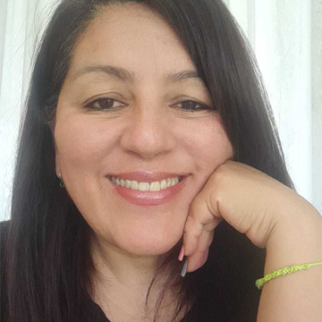

Soy Vero, creadora de Veuriel y Centro Lumar, espacios dedicados a la sanación, la armonización energética y el despertar de la conciencia.
Mi camino comenzó desde una profunda búsqueda personal y espiritual que, con los años, me llevó a formarme y a integrar distintas herramientas de acompañamiento y transformación. Trabajo conectando la dimensión energética, emocional y espiritual de las personas para ayudar a liberar bloqueos, ordenar la energía y abrir nuevos caminos en la vida.
Acompaño procesos a través de la angelología y la conexión con los Ángeles, las constelaciones familiares, el Feng Shui, la limpieza energética y distintas prácticas espirituales que facilitan la sanación profunda. También me formé como coach, lo que me permite ayudar a las personas a llevar la comprensión y la sanación a la acción concreta en su vida cotidiana.
Con el tiempo descubrí que mi forma más auténtica de acompañar se da en espacios cercanos y profundos. Por eso facilito retiros individuales y grupales, donde cada proceso puede ser sostenido con presencia, respeto y dedicación.
Dentro de estos encuentros también acompaño constelaciones con caballos, una experiencia de sanación muy profunda donde los animales participan desde su sensibilidad y sabiduría natural. A través de ellos se revelan dinámicas familiares y emocionales, permitiendo movimientos de sanación y reconciliación interior.
Hoy siento que mi camino también me llevó a una conexión muy amorosa con los animales y la naturaleza, reconociendo en ellos una guía silenciosa que ayuda a las personas a reconectar con su esencia. Mi energía canceriana me lleva naturalmente a crear espacios de contención, sensibilidad y acompañamiento sincero, donde cada persona pueda sentirse sostenida mientras atraviesa su propio proceso de transformación.
A través de Veuriel y Lumar comparto talleres, formaciones, retiros y procesos de acompañamiento para quienes sienten el llamado.